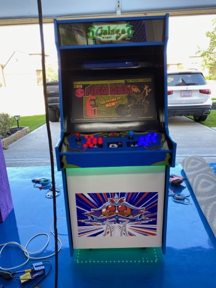

Howdy, my name is Elian Sours and I am a student at
Texas A&M University. I am a Junior Computer Engineering major with
an expected graduation date of spring 2023. Among my love for computers I enjoy cooking,
concerts, and traveling. I love to meet new people and experience new ways of life.
My enthusiasm for computers came relatively late. I always saw myself as a social being,
making me lean towards studying something related to business. Senior year of high school
I was fortunate enough to take a computer science course which lit a fire beneath me. I
started to reevaluate what trajectory I wanted to take in my life. As I was introduced
to the world of computers, I began enjoying the hardware/software interaction that goes
on within every machine. I wanted to get to the bottom of this complex and beautiful
puzzle that we call a computer. Unfortunately, my passion for computer technology came
somewhat later than others, meaning my college decision was already in swing. I
decided to attend a community college in Houston Texas, where I earned my associates
of science degree after simultaneously working and attending school for 2 years.
During those years I made sure to make an effort to learn outside of the classroom
and dive deep into what my likes and strengths were in the field of computers. I
figured out that I had a knack for software and hardware relations. This lead me
to apply as a computer engineering major at Texas A&M University where I have been
focusing on the electrical side of computer systems. Since attending Texas A&M,
I have had no doubt that this field is one I would like to dedicate my career to.
The challenging aspect of engineering is a driving factor for me to continue to
pursue knowledge.
During the start of the Covid-19 pandemic I found myself with some free time.
I decided to undertake a project to build a fully functional arcade cabinet as
I recall up playing arcade games . The arcade cabinet is used a raspberry pi
mini-computer with an emulation software called 'RetroPi', running on a Debian-based
operating system called
Raspberry Pi OS. The project entailed the software setup
to be able to emulate several video game titles from gaming systems like
the NES, N64, PS2, and Xbox to name a few. After making sure I had the
proper software installed I moved on to the wiring of the game controls,
as I wanted to replicate the mechanical button layout rather than plug in
a USB powered controller. Once I was able to fully operate the gaming system
using the wired buttons, I moved on to installing the system in a full-sized
arcade enclosure. The enclosure was made of plywood sheets with a coat of
paint. To add to the nostalgia, I decorated the cabinet with Galaga vinyl
prints. The outcome was a operational arcade system with a library of over
10,000 video games.

As an older sibling I wanted to take up the responsibility of exposing my younger
siblings, age 8 and 11, to the creative world of computers. Using a Raspberry pi
and a camera module for my hardware I set up a monitoring station to observe the
growth of a Bell Pepper plant. I taught my younger siblings basic use of python by
implementing a simple script that took a snapshot of the plant every day,
resulting in a collection of pictures that showed the growth of the plant
over time. Although I initially started the project to teach my younger
siblings, I ended up reenforcing hardware/software procedures for myself
as teaching encompasses a better understanding of topics, no matter the
simplicity of project.
I decided to gift my older sibling a thoughtful and functional gift by creating
a custom digital schedule. I used the open source software called
MagicMirror that
ran on a raspberry pi. The scheduling portfolio included individual modules
implemented using JavaScript that showed the Date, Time, daily schedule, news
updates, and custom picture backgrounds. The result was a monitor that could be
hung up on a wall to have daily digital schedule customized to aid in your daily
to-do list.
As mentioned in the 'About Me' section, I attended community college before
transferring to Texas A&M. During my 2 years at community College, I Decided
to get involved in my community by running for Treasurer in (SGA) Student Government
Association. After being elected I was usually found on campus helping organize
other clubs' excursions that included logistics of ordering, setting up, and
cleaning even though I was not a member of the organizations.
I also hosted student forums that allowed our student body to voice concerns,
suggestions, or ideas of how the College could better serve students.
I helped form an on-campus food pantry for students to address student's
struggling with food insecurities in the Houston area. The outcome was Leo's
Shelf which hosted food and toiletry items available to any student or community
residents. I worked on budgeting for the project that involved the food donations,
housing, and shelving for the items. Once the pantry was up and running I
continued to assist in the daily procedure of running the pantry.